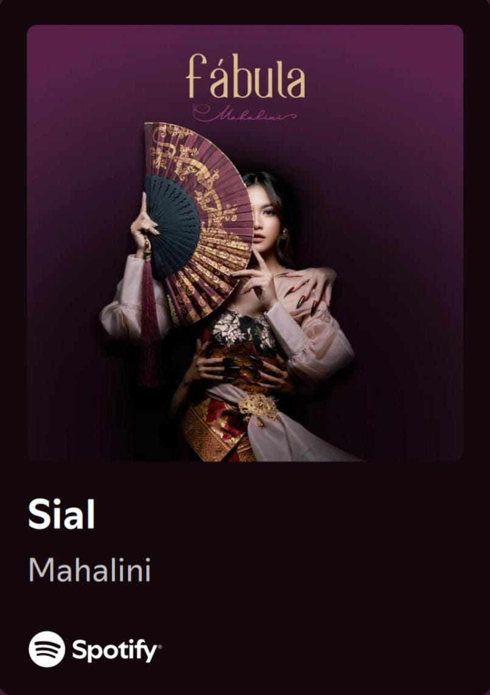
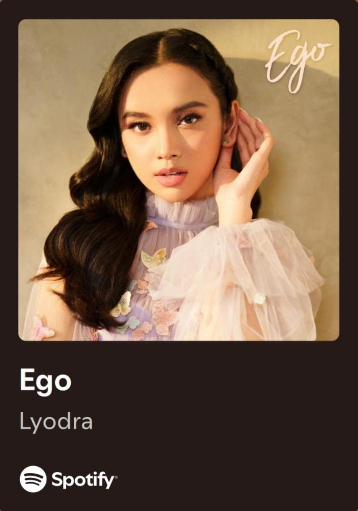

Sial adalah lagu hits dari Mahalini yang bercerita tentang sakit hati dan kehilangan. Liriknya yang menyayat hati dipadukan dengan vokal lembut membuat lagu ini viral di berbagai platform musik.
Ego menampilkan kekuatan vokal Lyodra yang luar biasa dengan tema tentang cinta dan perasaan yang berlawanan antara hati dan logika.
Hingga Tua Bersama adalah lagu penuh makna tentang kesetiaan cinta sejati, dibawakan dengan aransemen lembut dan romantis.
Janji Setia menggambarkan ketulusan cinta dan komitmen yang kuat, menjadikan lagu ini sangat populer di kalangan pendengar muda.
Surat Cinta Untuk Starla tetap menjadi lagu cinta klasik Indonesia yang menyentuh hati dengan liriknya yang puitis dan emosional.
Sorai adalah lagu bernuansa lembut yang menggambarkan tentang perpisahan dengan cara yang indah dan penuh perasaan.
Kangen adalah salah satu lagu legendaris dari Dewa 19 yang menggambarkan kerinduan yang mendalam kepada seseorang.
Harusnya Aku menjadi lagu wajib bagi para pendengar galau, dengan lirik yang penuh rasa penyesalan dan kehilangan.
Sempurna Lagu "Sempurna" karya Andra and The Backbone menceritakan rasa cinta dan kebahagiaan mendalam karena kehadiran seseorang yang melengkapi hidup, membuatnya merasa utuh dan bersyukur.
Separuh Aku adalah lagu yang sangat populer dari NOAH, mengisahkan tentang rasa kehilangan dan cinta yang belum selesai.